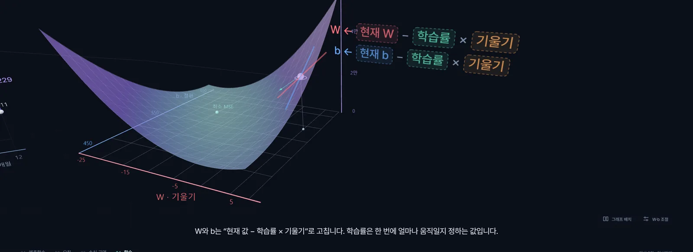
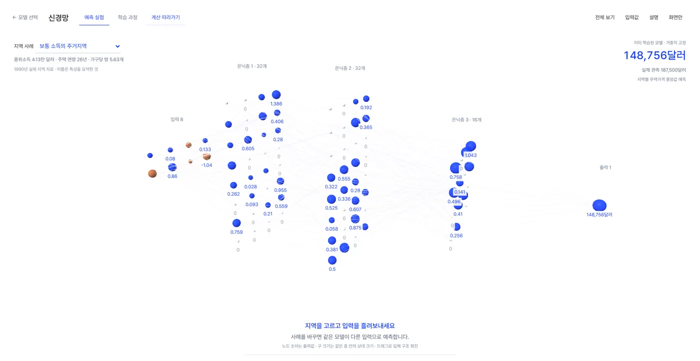
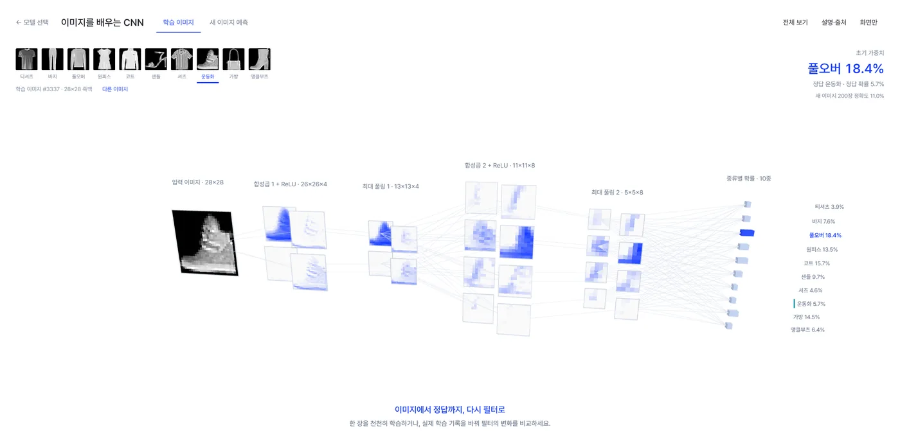
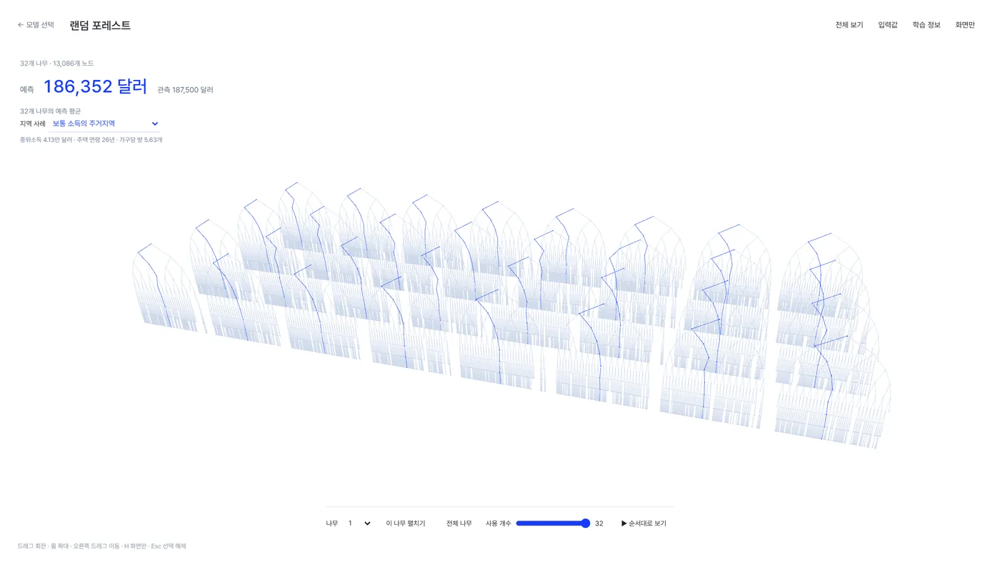
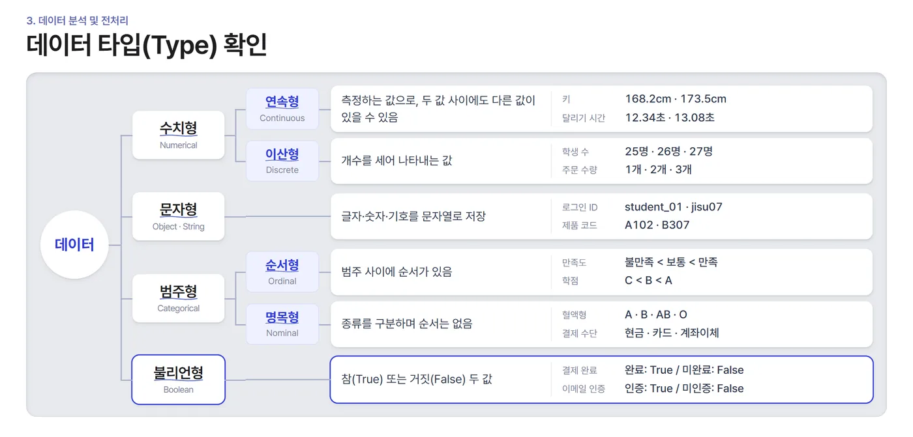
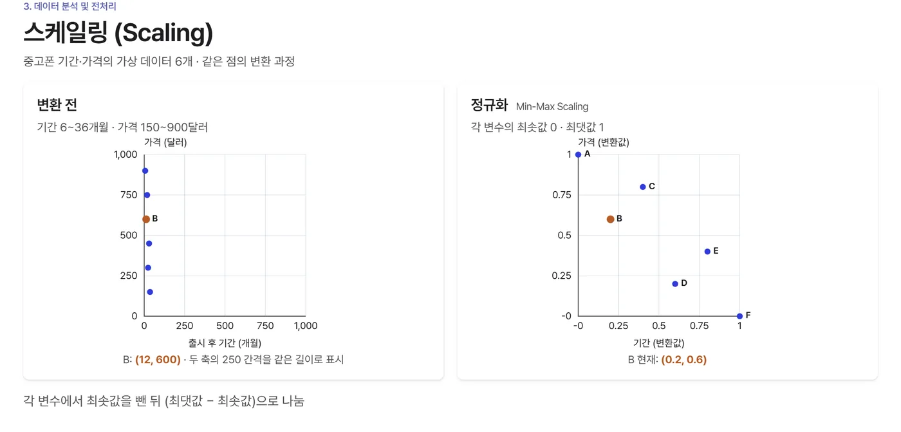

01
Lecture materials and teaching

- Linear regression
- MSE
- Loss surface
- Gradient descent
- three.js
- Voice narration



- 6 models
- Trained on real data
- Fashion-MNIST
- Step-through calculation
- three.js


- AICE Basic
- For high school students and non-majors
- 75 pages
- Step-by-step animation
- HTML, CSS, JS
- Apple Pencil annotation